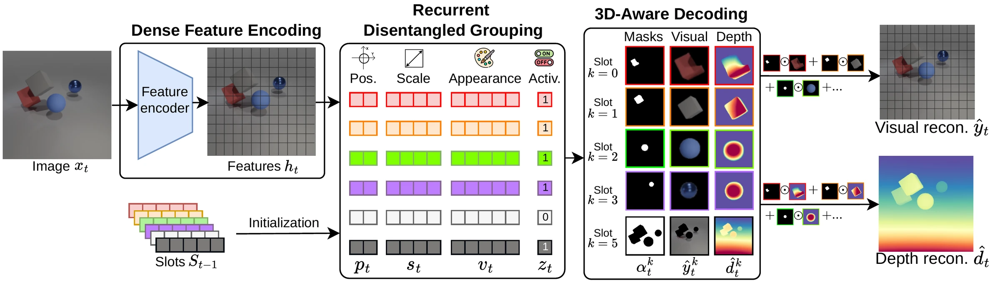
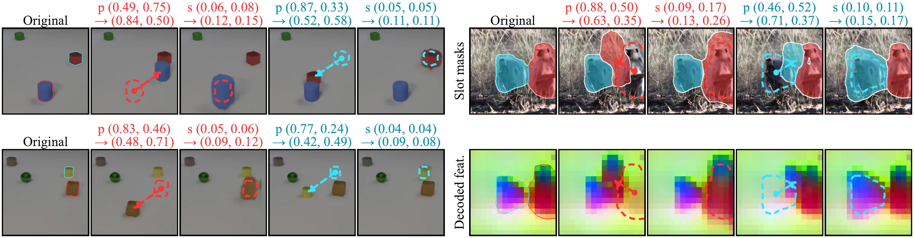
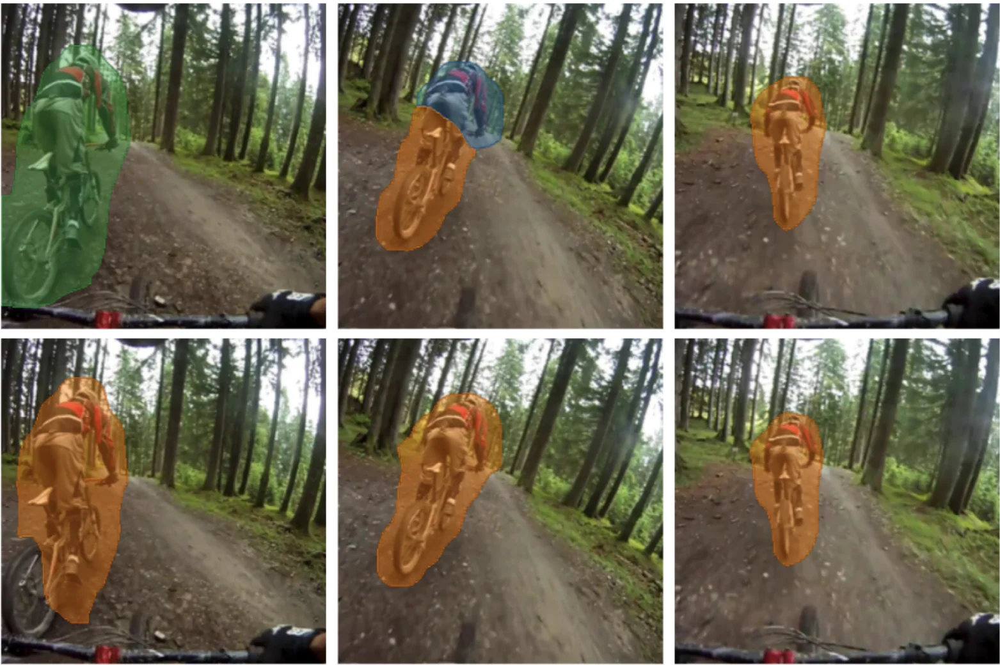
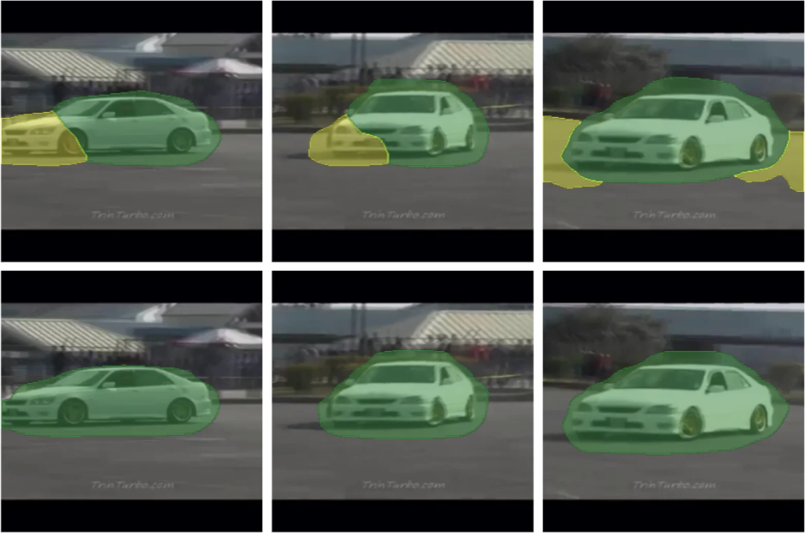

Disentangled slots
Each slot holds an appearance vector plus an explicit position and scale, instead of one entangled latent.
Unsupervised object-centric learning from video
IMOS laboratory, EPFL (Switzerland)
Corresponding author
Existing slot-based video models mix what an object looks like with where it is. UniSlot separates the two, so identity can stay fixed while geometry moves.
Each slot holds an appearance vector plus an explicit position and scale, instead of one entangled latent.
Temporal consistency acts on appearance only, so objects keep their slot while they move, turn, or leave and re-enter.
Slots also reconstruct monocular depth during training, which cleanly separates objects from similar-looking backgrounds.
Learning to decompose videos into persistent objects is a fundamental challenge in unsupervised object-centric representation learning. Despite recent progress, existing methods struggle to simultaneously achieve accurate object segmentation, consistent identities over time, and reliable foreground–background separation. To address these challenges, we introduce UniSlot (Unified Slots), an unsupervised framework for learning robust and disentangled object-centric representations from videos. UniSlot explicitly separates object appearance from its 3D-aware geometric pose in the scene, linking object identity to appearance while leveraging depth to better distinguish objects from their surroundings. UniSlot achieves state-of-the-art performance in unsupervised object-centric video decomposition and tracking across synthetic and real-world benchmarks, yielding substantially tighter object masks and reducing background leakage while preserving object identities. Beyond decomposition and tracking, these improved representations translate directly to downstream tasks such as unsupervised object dynamics prediction, enabling more accurate forecasting of future object trajectories.
A frozen DINO encoder, a recurrent disentangled grouping module, and a 3D-aware decoder that reconstructs both features and depth.

Swipe to see the full diagram →
Because each slot is decoded in its own frame set by position and scale , these values can be edited in a trained model with no retraining. Moving or resizing one slot changes only that object and leaves its appearance and the rest of the scene intact.

Swipe to see the full figure →
Slot interventions on CLEVRER (left) and YouTube-VIS (right). Titles give values before → after, and dashed contours mark the original extent. On YouTube-VIS the model reconstructs DINO features rather than pixels, so the edits show in the decoded masks and features.
UniSlot is best on every metric across five video benchmarks, from synthetic scenes to real-world videos.
Swipe to see the full figure →
Swipe to see the full figure →

Swipe to see the full figure →


UniSlot representations directly improve predictions of future object states and reasoning about object interactions, with every object-centric model kept frozen.
An Aloe transformer answers questions about object properties, collisions and their causes from each method's frozen slots. Predictive questions use slots rolled out by each method's own dynamics model.
@article{wei2026unislot,
title = {Rethinking Object-Centric Representations for Video Dynamics},
author = {Wei, Amaury and Nejjar, Ismail and Fink, Olga},
journal = {arXiv preprint arXiv:2606.23436},
year = {2026}
}